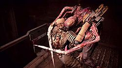
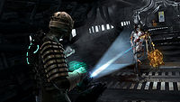
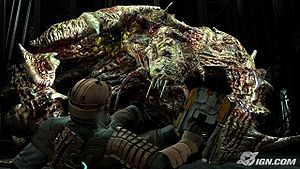

Dead Space
 De: La Frikipedia, la enciclopedia extremadamente seria.
De: La Frikipedia, la enciclopedia extremadamente seria.
De la serie Videojuegos:
Dead Space

| Desarrollado por:
|
Eleptronic Arts en su cede.
|
| Distribuido por:
|
Electronic Arts.
|
| Diseñado por:
|
Electronic Arts carajo!.
|
| Motor
|
"El Padrino" o Godfather Enginges.
|
| Género(s)
|
Thir Person Chuter, survival holol, +18, +21, -45.
|
| Fecha de lanzamiento:
|
En Halloween
|
| Modos de juego:
|
Blood! Blood! Blood! y 1 jugador
|
| Requisitos:
|
Tener cojones pues básicamente IP anónima jamás podría acabarlo
|
| Disponible en:
|
Xbox 360, Playstation 3 y Hasefroch, una versión en NES
|
| Formatos:
|
HD-VHS y Blu-Disquette
|
| Edades:
|
+18 y -30
|
| Puntuaciones:
|
Yo le doy 10/10
|
Dead Space (ポざん Ded Speiz) un videojuego del género no apto para marícas o niñitas, distribuido por Electronic Arts lanzado en Octubre del 2008(para ser exactos el 31 de octubre Muahahaha!) para la Xbox 360, la Playstation 3 y la Hasefroch. La historia es de un tío llamado Isaac Clarke, un ingeniero espacial obviamente americano(porque no faltan esos) que pelea contra un virus polimorfo que vuelve humanos en extraterrestres grotescos llamados Necromorfos en el baño de hombres de la nave Ishimura. Se conoce una secuela para el Wii llamada Dead Space:Extraction y 3 pinches películas
Historia
Es el siglo 26, la tierra esta totalmente jodida en crisis por culpa de Al Gore y su película, por lo cual, Ishimura que mientras le rompía las pelotas al planeta Aegis VII(aegis uve ii) envió una señal con interferencia (probablemente Sky les había cancelado la suscripción por falta de pago), por lo cuál la Concordance Extraction Corporation mando a la Kellion para llevar al técnico del cable y así restaurar los 1000 canales de televisión. En ella iban a bordo dos imbéciles, Zach Hammond, la putirijilla Técnica en Visual Basic de la Ishimura Kendra Daniels, y el técnico experto en reparar antenas de cable Isaac Clarke(el cual termina siendo el huevón que hay que controlar).
Una falla ocurre en la Killion(pues al maestro mecánico se le había olvidado revisar el radiador) y ya no tenian forma de salir de la Ishimura... Mientras exploraban la nave, los necromorfos atacaron sexualmente a la tripulación, quedando solo vivos Isaac, Kendra y Zach. Tu misión es básicamente cargarte a todo lo que no tenga un traje como el tuyo, se arrastre, este embarazado, sea pequeño, te de miedo, parezca la polla de nacho vidal y te quiera comer además de intentar salir de ahí vivo.
Isaac mientras actúa de "Bob el constructor" descubre en paredes chorradas escritas con sangre como "Dispárales en los tanates tentáculos", ó "El capitán se hecho un pedo" ó "Tu mamá se me antoja", además de hallar el MP3 del capitán en el cual descubre que la Ishimura estaba cometiendo una Operación Ilegal(probablemente transporte de cocaína) en la cual el capitán lo estaba incubriendo. Resulta que este pinche asunto involucra al gobierno (raro...) y a la iglesia de la Scientologia Unitología al haber recuperado un consolador el cual creen que es la prueba de que existe Diós, pero en realidad albergaba a los necroimbéciles, horas después la tripulación empieza a sentirse dopada solo para luego ser hechos Sir Loin con puré por los necromorfos, y otros fueron transformados.
El capitán se puso como loca en bar intentando llevarse el artefacto a la tierra, pero murió "accidentalmente" por el Dr.Kyne(un gilipollas), más tarde el pendejo de Hammond niega saber que putas es el artefacto, aunque siguen creyendo que es otro gilipollas. Isaac se encuentra con su novia. Isaac reparó la fibra óptica del cable y lograron ver una nave militar, "VALOR", la cual contenía una nave de escape con un necromorfo, Isaac y el gilipollas de Zach intentan recargar la batería de la nave, pero a Hammond se lo carga la chingada.
Más tarde se encuentran con el Gilipollas maestro (Kyne) y les dice que le devuelvan el consolador, pues podría ser la clave de la mente grupal de los necromorfos(lo que los controla, melón!), después de haber quedado en una cita con el Dr.Kyne, la calientapollas lo asesina, dando a conocer que era una fracción del gobierno con el plan de insertarse el consolador y llevárselo a la Tierra. Entonces resulta que el artefacto no era más que una copia de uno que habían encontrado en la tierra, el cual pusieron en Aegis para ver que putas pasaba. Así que Kendra se va de la nave dejando a Isaac, pero aún con su novia, para repoblar la nave interceptarla.
Isaac se lleva el artefacto a la superficie del Aegis(en la colonia minera donde lo encontrarón) y esto parece sedar a la mente grupal, pero al haber problemas con el sistema de gravedad, Isaac empieza a flotar como tonto, lo que el no sabía es que la visión de su novia Nicole era una proyección del artefacto para que lo devolviese al planeta y Kendra llega a tomar el artefacto, pero al intentar llevarselo la mente grupal la mata, a Isaac se le hizo pan cojido comido derrotarla y al dejar el artefacto en Aegis, el abandona el planeta, pero es atacado por lo que parece ser su novia encabronadísima en necromorfo...
...CARAJO!
Personajes
 Para tí probablemente sería tu peor pesadilla, pero para
Isaac no es más que el abrazo de año nuevo.
El único que controlas es Isaac Clark pues Kendra solamente es una calientapollas te da información y Zach pues... ah... Zach... bueno, continuemos:
- Isaac Clarke: Es el técnico encomendado a restaurar la señal de TV de la Ishimura, tripulante de la Kellion junto a otros 3 imbéciles y Kendra, pero cuando busca el baño para hacerse la paja la tripulación es atacada por los necro
emosmorfos, y para terminarla de cagar completitamente: Su novia era médica en la Ishimura.
- Kendra Daniels: La que pensabas que al final te tirarías en los creditos... tenías que ser un N00b, es la que trabajaba en el gobierno y la que te dejo en la Ishimura con tu novia la Nicomorfa, básicamente te daba soporte técnico por si tu Norton se jodía, pero al final se la carga el consolador.
- Zach Hammond:: El que tenía un 99.9% de ser el antagonista, pero le gano Challus Mercer por el .1% ... es el que puede dejarte solo en la nave con tal de acabar la misión e irse a dormír... muere al ser aplastado, aventado y devorado por un Brute.
- Challus Mercer: Tripulante, doctor y devoto(el antagonista perfecto) es tan devoto que a todos en la Ishimura les tocaba la puerta(como testículo de Jehova) para convencerlos de cometer suicidio en masa, el realmente quería llevarse el artefacto a la tierra. El le insiste a Isaac que se muera para que sus necrohijos vivan, al final se convierte en un super necrodescerebrado que intenta matar a Isaac...
- Terrance Kyne: Es el jefe científico del Ishimura, está un poco loco por
tanta paja los sucesos ocurridos, el ayuda a Isaac a devolver el consolador al planeta hasta que Kendra lo mata.
- Tentacle Rape:mascota
sexual de Isaac
Armas
En este juego debes saber que no hay armas más que el Pulse Rifle(o rifle de pulso), pues todas son las herramientas con las que repararías la señal, todas las armas excepto algunas DAH¡ tienen un efecto dañino ataque secundario:
- Da Plasma Cutter Madafaka: O la
jodida Cortadora de Plasma, es el equivalente a las pinzas para cable, pues es utilizada para pelar los cables, pero cuando empieza el reventón y todos estan super-tomaos, la cortadora de plasma es la efectiva contra Necromorfos, deberías saber que es el arma principal por lo que no te podrás deshacer de ella por más que llores. Siempre es efectiva contra enemigos como los Guardianes y las Embarazadas, pues si no les cortas las extremidades te pegan hostias por dejarles sola con el niño(para ser exactos de 20 a 50 niños), te la pelaste lamentablemente no tiene ataque secundario.
- Da Pulse Rifle: O el rifle de pulso, es el equivalente al arma que portarías si te asaltarán mientras reparas una antena, pues esta SI pega hostias pues es de largo alcanze, es multidisparo y muy fácil de usar(a menos que sea tu primera vez en la Ishimura y te de miedo siquiera el intro), es muy efectiva contra enemigos como... como... la mayoría, excepto los Brutes, su ataque secundario es hacerse la pirinola disparando en círculos.
 El cañon lineal disparándole a tu conyuge.
- Da Lineal Canon: O el cañon lineal es otra herramienta
arma contra los necromorfos, esta si es la chingona pues te cargas a varios de ellos, su disparo líneal(o porque putas pensabas que se llamaba así), aunque usté' no lo crea, su ataque secundario es poner minas... así o más rara.
- Da FleimTrawer: O el lanzallamas, es efectivo contra los primeros enemigos y uno que otro más fuerte, pero siempre quémalos, porque unos se vuelven a parar. Su ataque secundario es aventar bolas de fuego(como las mías) y cuando chocan con un N00b causan muerte y destrucción muhahahaha!, o talvez solo incendian un poco.
- La Motosierrrrrrrrrrrrrrrrrrrra: ¿Necesito explicarla?... ah, ok... Mezcla Gears of War con Puerta al Infierno y obtienes probablemente
un sueño húmedo esta arma, pues su contra-parte es el cañon líneal, básicamente lo es porque como esa es de largo alcanze, la motosierra no, es perfecta para hacer Sir Loin a los Necroemos. Su ataque secundario es aventarla sierras a distancia.
-
Mortal Contact Ray: Este dispositivo funciona vía bluetooth y es práctico para navegar en la red, posiblemente el arma más rara del juego, pues si la mantienes mucho tiempo cargada te quema la mano(como el estúpido rifle de Ass de Halo), ataque secundario no tiene.
- Energy Canon: ¿Qué quieres? Es lo mismo que el Contact Ray solo que le pusieron 6 baterías XXX y se hizo poderosa.
Enemigos
 A su puta madre! Corre IP anónima!.
- Slashers: No, no son los clones del guitarrista, estos son los enemigos con los que te encuentras al principio en tu peligrosa travesía,
Hobbit! estos son humanos infectados con la emotósis múltiple que dejan de serlo y se convierten en necromorfos... son fáciles de matar(a menos que seas niña (sin ofender géneros)).
- Acechadores: Hace Hechadores, mezcla rara de infante-emo que sabe espantarte cuando andan por las paredes(son parecidos a los desgraciados de Gears of War, pero estos si puedes perderlos de vista)
- Leapers: O "nosecomosellaman", Estas cosas son el resultado de mezclar ADN del Gregory House con el de una oruga ¿que obtenemos? así es! "Una cosa sin piernas!", estos ojetes te brincan para darte un abrazo y generalmente son escurridizos, los puedes encontrar a partir del capítulo 2, y siempre estan en ambientes en los que no hay gravedad.
- Guardianes: Extraña mezcla Mujer-IP anónima la cual se pega a las paredes, están embarazadas y no tienen piernas... aunque no es muy amenazadora que digamos, puede dar a luz con el simple hecho de verte
galán, sabes que estas cerca de una porque están dando trabajo de parto y tu lo escuchas tras una puerta de 3 metros de grosor hecha de titánio.
- Embarazadas: Lo mismo que la de arriba, pero con piernas, lo divertido de lidiar con estas perras es que al caminar lento, tener una panzota, piernas y brazos, puedes cortarle cada extremidad para que no se mueva y se ponga a gritar... solo que nunca les dispares a la panza o le tendrás que poner nombre a cada uno de sus hijos.
- Exploders: Ojetes con bolsas en la mano que pegan a los tanates, disminuyendoté más de la mitad de la salud, son medio lentos, si lo desmembras, será pan comido.
- Infectadores: Las chingaderas que te recomiendo que mates primero si no quieres tener el doble de diarrea y el doble de enemigos... son unas madres que pueden morderté si no tienes cuidado, se encargan de esparcir el virus, aunque con unos tiros solucionas todo(excepto los necromorfos que creó).
- Dividers: Altos, feos, estúpidos y fuertes, pueden darte más de una mano si lo necesitas pues esta compuesto por extremidades, si lo atacas verás como te atácan las cosas que le desprendiste.
- Brutes: Altos, feos, estúpidos, fuertes y además con blindaje, no gastes munición pues su parte frontal es inmune a casí todas las armas.
- Twitchers:
Hijosdeputa Soldados infectados que corren como Usain Bolt y atacan como si fueras un maricón, estos tienes de 2: correr para que te alcánzen y te maten o dispararles para que te maten.
Las emociones de Isaac
En sí, nuestro personaje es muy emotivo, si no, ve esto:
Isaac con la cortadora de plasma
Isaac buscando a su esposa
Isaac al despertar de una pesadilla
Isaac apoyando al Chelsea
Isaac en la pubertad(nótese el acné)
Isaac recibiendo el título de Ingeniero en Cable
Isaac comprando su primer auto
Isaac reparando una falla eléctrica
Isaac en la noche de bodas
Isaac viendo Playboy después de ver NatGeo
Isaac vomitando por el alcohol
Isaac tras haberle diagnosticado cáncer de matríz
Isaac dudando en tener matríz
Isaac en una foto escolar
Isaac en el momento del éxtasis
Isaac fotografiando a la vecina cambiarse
Isaac al jugar Dead Space
Isaac agonizando después de la patada giratoria
Isaac perdiendo la virginidad
Isaac demostrando sus sentimientos por Zach
Conclusiones
Si quieres pasar un rato quejándote del estómago, llendo al baño cada que tomas el control de la consola, pensando en que hay un necromorfo abajo de tu cama, dudando de la existencia de la vida extraterrestre, preocupándote por el medio ambiente para que al final el mundo no tenga que estar en crisis para que no construyan las Rompe-Planetas y después la más grande de todas se infecte con un microorganismo extraterrestre escondido en un artefacto religioso el cual solamente era una copia del original el cual todos buscan para llevárselo a la Tierra por culpa del gobierno y la calientapollas que quiere seducirte para robarte el artefacto mientras tu estas buscando a tu novia perdida en la nave en la cual hacía servicio médico la cual fue infectada por un microorganismo extraterrestre escondido en un artefacto religioso el cual solamente era una copia del original el cual todos buscan para llevarselo a la tierra... (1 hora después) para que seas comido por tu novia uuuuuuuuuuuhhhh y aparte divertirte con un buen survival horror, este definitivamente es tu juego.
Enlaces que debes ver
El trailer de Dead Space "Estrellita donde estas"
Si te pareció muy serio el juego, intenta reirte con estos 11 minutos de muertes
Trailer tipo Película
|
|
 Shooter Shooter
 Terror Terror
 Velocidad Velocidad
 Rol Rol
 Estrategia Estrategia
 Aventuras Aventuras
 Fight! Fight!
 Clásicos Clásicos
 Deportivos Deportivos
 Aventura gráfica Aventura gráfica
 Novela visual Novela visual
 Personajes de videojuegos Personajes de videojuegos
|
Autor(es):
- Fordus
- Max Slug
- Khazike Khashondo
- Pakirri
- Lljosemll
- Veni Vidi Vici
- Dark temptation
- Kevrochi
- Qwertyuio583
- IGN8
Frikipedia 2005-2016, Licencia
GFDL 1.2 - Extraído por FrikiLeaks